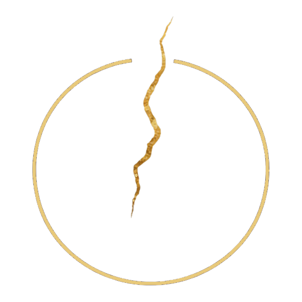

Le laboratoire des possibles
Expérimentations en cours autour des outils génératifs — image, son, texte — et de leurs usages en médiation.
Recherche
Via GnosisVia Gnosis — Explorer
Oser de nouveaux chemins. Le laboratoire des possibles, là où se testent les idées avant qu'elles ne deviennent ateliers.
Explorer, c'est accepter de ne pas savoir où l'on arrive.
Chaque nouvelle piste — une technique, un usage, une question éthique — est d'abord éprouvée en atelier personnel avant d'être proposée à un public.
Ce laboratoire nourrit aussi une réflexion continue sur la place de l'humain : ce que l'IA permet, ce qu'elle ne remplacera pas, et ce qu'il faut préserver.
Expérimentations en cours autour des outils génératifs — image, son, texte — et de leurs usages en médiation.
Recherche
Récits et carnets illustrés accompagnant chaque projet — la trace écrite du chemin parcouru.
PublicationsRecherche, expérimentation, réflexion sur les usages — la porte est ouverte.